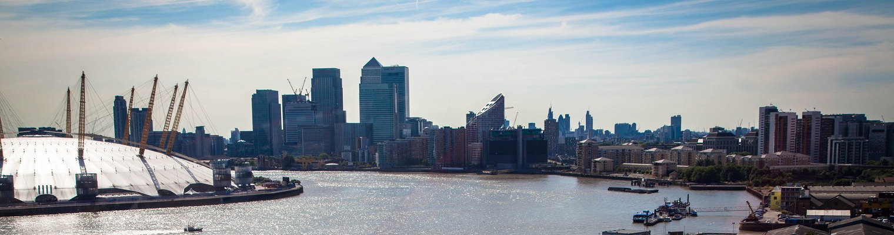

History timeline
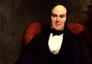
1836
The Birmingham and Midland Bank was established by Charles Geach in Union Street in the city of Birmingham on 22 August.
Birmingham in the 1830s was a hive of enterprise, densely populated with engineering firms, gunsmiths, jewellers and other craftsmen. Traditionally these companies had done their banking with small firms, but after the banking crisis of 1825-1826 they were looking for a more secure alternative.
Charles Geach, a 28-year-old clerk at the Bank of England with good contacts in the business community, joined forces with local businessmen to form the Birmingham and Midland Bank. His leadership has been credited with helping the young bank survive the turbulent economic conditions of the 1840s and 1850s.
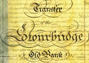
1851
The bank purchased the 'Stourbridge Old Bank' of Bate and Robbins and its office in the town became the Birmingham and Midland Bank's first branch.
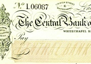
1891
The bank acquired its first London address by purchasing the Central Bank of London Limited.
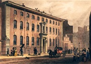
1898
Midland Bank acquired City Bank Limited to consolidate its presence in the capital. It became one of the four largest banks in the UK and the headquarters were moved to Threadneedle Street.
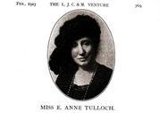
1907
Miss Anne Tulloch became the first female member of staff.
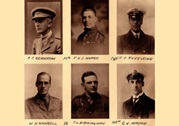
1914
Thousands of HSBC employees fought in the war. The resulting staff shortages led to more women being employed by the bank.
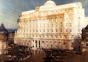
1930
The architect Sir Edwin Lutyens designed the new headquarters in London, which were known as 'the palace of finance'.
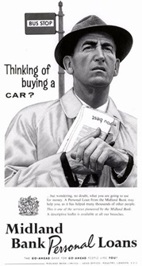
1958
Midland Bank became the first bank in the UK to offer unsecured personal loans in August 1958.
The government had lifted restrictions on lending in an effort to boost the economy.
In just six months the bank made more than 60,000 personal loans totalling GBP9.5 million. Harold Macmillan, the Prime Minister, wrote to Midland’s chairman: "You certainly put the cat among the pigeons. I shall send my application in due course."
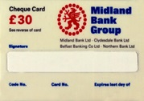
1966
The bank became the first British bank to issue cards to guarantee cheque payments.
1986
Midland Bank celebrated its 150th anniversary. To mark the occasion, branches hosted a series of special exhibitions and the bank launched a number of schemes to help deprived areas.
1989
On 1 October 1989 the first telephone bank was launched. First direct offered banking products and services by telephone, 24 hours a day, 365 days a year. After its launch, the bank received 2,000 calls a day and by the end of the first year 100,000 customers had signed up. This grew to around 1.25 million customers by the end of 2014.
1992
The chairman of HSBC Holdings, William Purves, and Group Chief Executive of Midland Bank, Brian Pearse, made an historic announcement on 17 March 1992: HSBC Holdings had made an offer for Midland Bank. On 25 June Midland Bank became a member of the HSBC Group. It was one of the biggest banking mergers of its time.
1999
The Midland Bank name was replaced, creating a clear and consistent identity.
2000
The online banking service offered First Direct customers the opportunity to check account balances, view transactions and make payments.
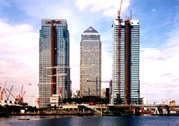
2002
Construction of HSBC’s new headquarters in Canary Wharf, London, began in January 1999. The building was designed by Norman Foster, who also created the HSBC building in Hong Kong. The 42-storey tower was completed in 2002. Outside the building are two lions, Stephen and Stitt. They each weigh close to one tonne and have eight coins buried in their bases, which is considered lucky in China.
2004
HSBC bought the retail financial services arm of the Marks & Spencer Group.
2011
All online banking customers were given an HSBC Secure Key. The security device generates a unique passcode each time a customer logs on.
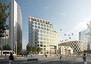
2018
HSBC UK opened its new head office in Birmingham. The 10-storey building accommodates up to 2,500 HSBC UK staff, and is one of the greenest buildings in Birmingham. It is the first in the city to be built to the standards required by the Leadership in Energy and Environmental Design (LEED) Gold accreditation.
2023
In March 2023 HSBC acquired Silicon Valley Bank UK (SVB UK) for £1. In June, HSBC Innovation Banking was launched, combining the innovation expertise and industry experience of the former SVB UK with the global capabilities of HSBC.